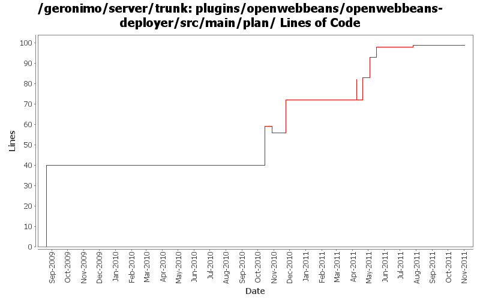

[root]/plugins/openwebbeans/openwebbeans-deployer/src/main/plan

| Author | Changes | Lines of Code | Lines per Change |
|---|---|---|---|
| Totals | 12 (100.0%) | 123 (100.0%) | 10.2 |
| dblevins | 1 (8.3%) | 40 (32.5%) | 40.0 |
| djencks | 4 (33.3%) | 37 (30.1%) | 9.2 |
| xuhaihong | 5 (41.7%) | 32 (26.0%) | 6.4 |
| genspring | 2 (16.7%) | 14 (11.4%) | 7.0 |
GERONIMO-6204 Decouple OpenWebBeans from web container
1 lines of code changed in 1 file:
GERONIMO-5893 only to add openwebbeans-jsf dependencies when there's webbeans in app.
1 lines of code changed in 1 file:
GERONIMO-5050 Start of always using openejb for owb
2 lines of code changed in 1 file:
recommit changes for GERONIMO-5893 to seperate the owb-jsf module out of default openwebbeans env.
13 lines of code changed in 1 file:
GERONIMO-5938 Load JSF taglib xml files from bundles
10 lines of code changed in 1 file:
GERONIMO-5916 Add more dependencies to the default environment, so while the deployed application is a WAB, those configuration files could be found from BundleClassLoader
11 lines of code changed in 1 file:
Revert the changes for GERONIMO-5893, it caused deployment failures
0 lines of code changed in 1 file:
GERONIMO-5893 Use a separate environment to host the JSF plug-in dependency, and only adds it to the environment if beans.xml is found
10 lines of code changed in 1 file:
GERONIMO-5050 OWB integration set up injection of ee resources with naming builders. Also provide a more likely classloader for proxies
16 lines of code changed in 1 file:
GERONIMo-5050 bind BeanManager in jndi
0 lines of code changed in 1 file:
GERONIMO-5050 commit a slightly modified version of jarek's patch which helps get some of the jcdi tck passing
19 lines of code changed in 1 file:
Beginning of an OpenWebBeans integration
40 lines of code changed in 1 file: